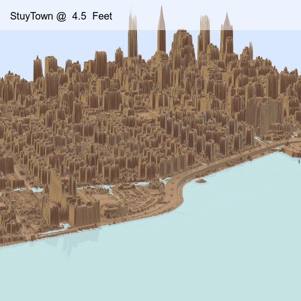
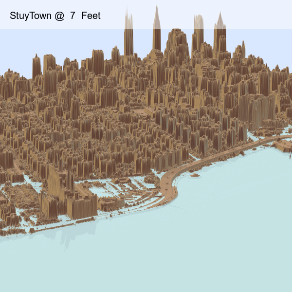
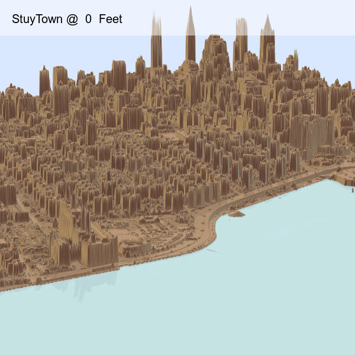

Based on Tyler Morgan-Wall's Rayshader package on R, this exercise looked at 6 tiles (1/2 x 1/2-mile square) from the 2017 New York City Topobathymetric LiDAR data to virtually re-construct a portion of Manhattan's Lower East Side. With estimates of over 6-feet in sea-level rise in New York City by the year 2100, a 7-foot flood level was modeled to see which areas will be affected. Plans for the East River Park renovation will minimize the area's risk to flooding.



Currently working on looking at additional areas, such as the low-lying Far Rockaway in Queens, while also exploring additional features on Rayshader with polygon support for improved visualization.